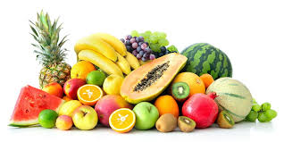

Fruits are the mature, seed-bearing reproductive structures of flowering plants (angiosperms). Botanically defined as a ripened ovary, they serve to protect seeds and assist in their dispersal. In culinary terms, fruits are generally recognized as fleshy, sweet, or sour plant products often eaten raw. They are a critical part of a healthy diet, providing essential vitamins, minerals, fiber, and antioxidants.
